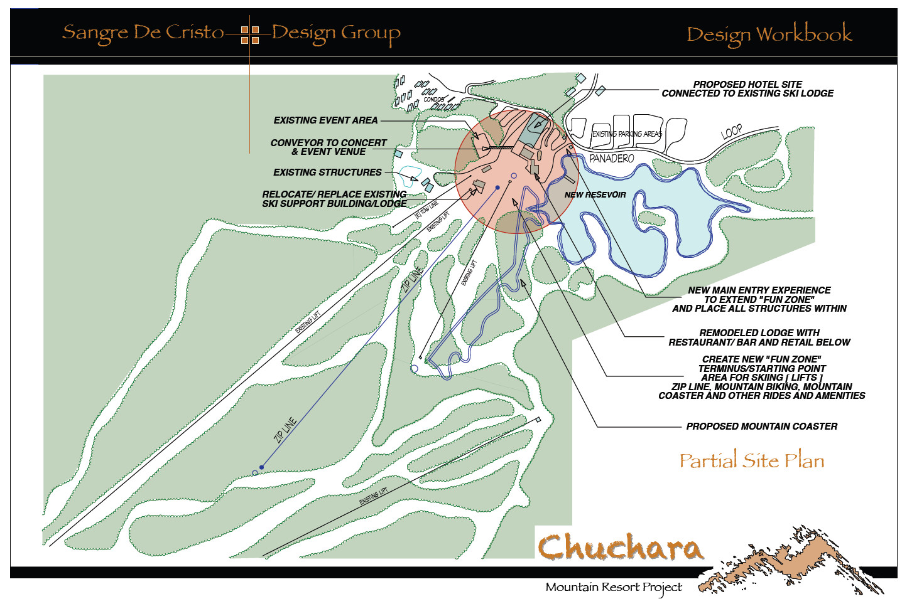
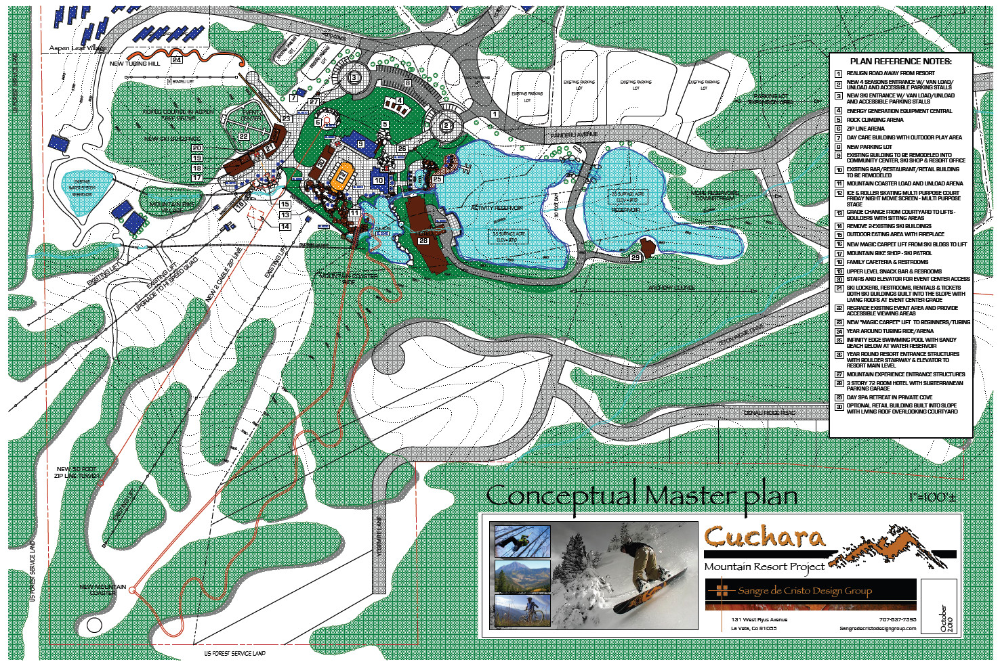
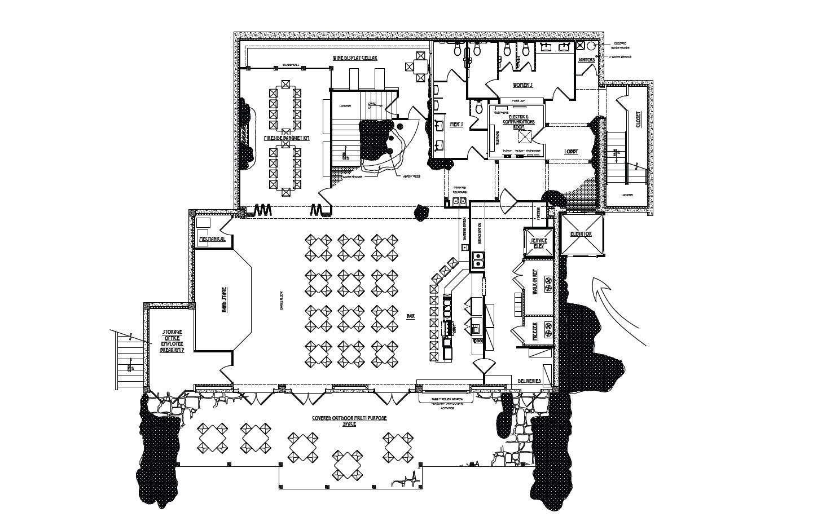
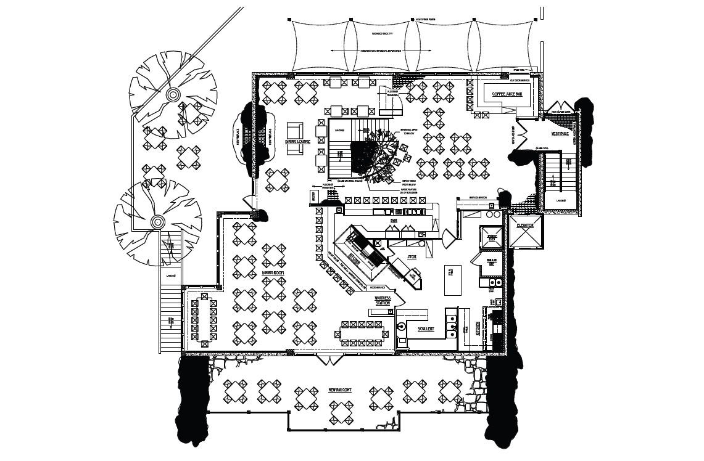

huerfano county, colorado
cuchara mountain resort
Our mission is to create an all-season, environmentally sensitive, recreational destination that serves as a sustainable economic engine to stimulate job growth and business opportunities for the people of Huerfano County and the State of Colorado.
Capitalize on the unique assets and character of the Cuchara Valley that include the people, location, geography and history for the purpose of creating an environment for job growth in Huerfano County.
Develop a year-round recreation facility and programs utilizing existing facilities and infrastructures.
Secure philanthropic, government, and public funding for the redesign of the existing facilities and construction of a community center, recreational lake and support facilities.
Design and construct a state of the art electro-mechanical infrastructure that will support a self-sustaining, green energy recreation facility. Develop a long-range plan to utilize an energy efficient infrastructure using geothermal heating, wind and solar generated electricity that will support a total off-grid operation with any excess capacity produced sold back to the grid.
Establish a multi-purpose outdoor center to provide a venue for education, entertainment and the creative arts.
Create an atmosphere conducive for new business opportunities and ancillary services to provide the necessary goods and services for the community visitors and residents.
The Cuchara Mountain Resort recreation area would be designed as a family oriented destination facility, with programs and activities that will also attract a significant educational, corporate, and institutional component.



